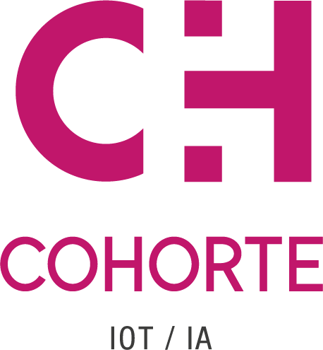

🏢 Entreprise / Contexte
👥 Equipes
🖥 Projet
🛠 Outils & Compétences
📈 Bilan & Analyse
🌅 Perspectives
🤔 Q&A


_
Tuteur Entreprise: Florence Malardel
Tuteur Ecole: Pierre Bouillet

Activités
Editeur de Logiciel
Industrie
Effectifs
Groupe : 50
Quasar : 30
Situation
Renouveau
Web
Pôle Front
Equipe Applicative
6 Personnes
Scrum
Dev Front